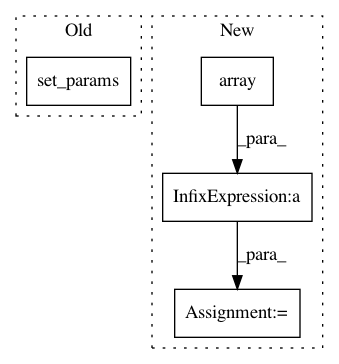

bb9894245d4f138871a2a8207fc62ece26b2c79a,mloop/learners.py,GaussianProcessLearner,fit_gaussian_process,#GaussianProcessLearner#,1304
Before Change
self.noise_level = self.cost_scaler.var_
// Cost variance"s scaling factor is square of costs"s scaling factor.
self.scaled_noise_level = self.noise_level / self.cost_scaler.scale_**2
self.gaussian_process.kernel.set_params(k2__noise_level=self.scaled_noise_level)
self.gaussian_process.fit(self.all_params,self.scaled_costs)
if self.update_hyperparameters:
After Change
// self.noise_level is overwritten.
self.noise_level = cost_scaling_factor**2
if np.any(np.isnan(self.noise_level_bounds)):
self.noise_level_bounds = np.array([1e-5, 1e5]) * cost_scaling_factor**2
// Cost variance"s scaling factor is square of costs"s scaling factor.
self.scaled_noise_level = self.noise_level / cost_scaling_factor**2
self.scaled_noise_level_bounds = self.noise_level_bounds / cost_scaling_factor**2
In pattern: SUPERPATTERN
Frequency: 3
Non-data size: 4
Instances
Project Name: michaelhush/M-LOOP
Commit Name: bb9894245d4f138871a2a8207fc62ece26b2c79a
Time: 2020-10-10
Author: zakven@mit.edu
File Name: mloop/learners.py
Class Name: GaussianProcessLearner
Method Name: fit_gaussian_process
Project Name: scikit-learn/scikit-learn
Commit Name: 0b0afd2d644c65554c907f8e8320e507f8caaefc
Time: 2020-07-17
Author: noelanorodriguez@gmail.com
File Name: sklearn/feature_selection/_mutual_info.py
Class Name:
Method Name: _compute_mi_cc
Project Name: scikit-learn/scikit-learn
Commit Name: 0b0afd2d644c65554c907f8e8320e507f8caaefc
Time: 2020-07-17
Author: noelanorodriguez@gmail.com
File Name: sklearn/feature_selection/_mutual_info.py
Class Name:
Method Name: _compute_mi_cd